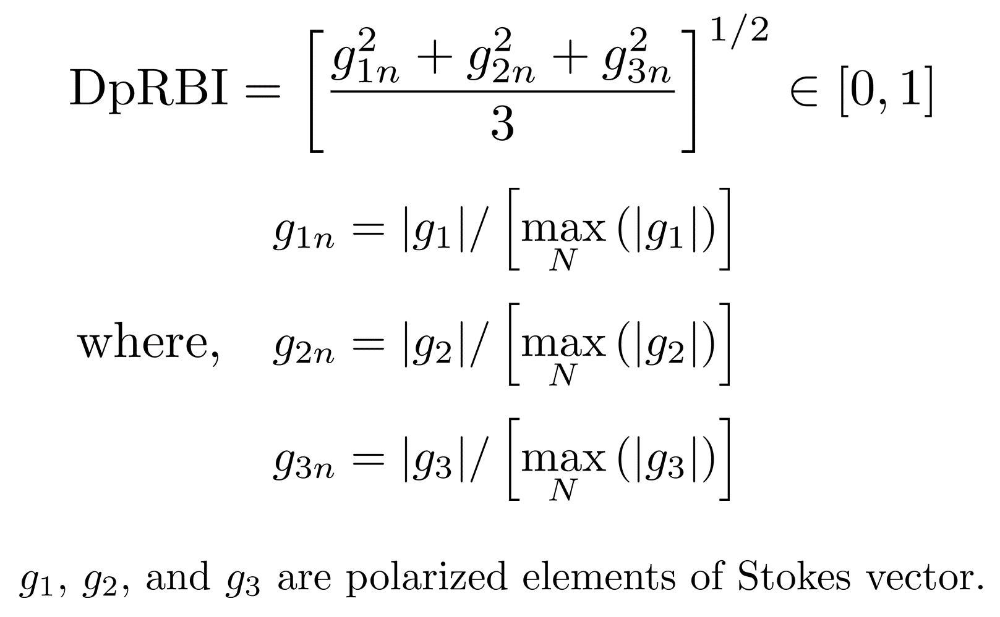
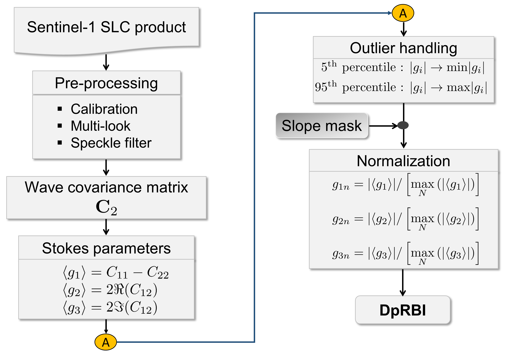

| Dual-pol Radar Built-up Index Generation | |

Microwave Remote Sensing Lab (MRSLab)
Indian Institute of Technology Bombay, India
Contributors: Dr. Abhinav Verma et al.
Tel: +91-22-2576-7677
Date: 02 Feb 2026
E-mail: mrscsre@gmail.com; averma.iirs@gmail.com
URL: http://www.mrslab.in
The Dual-pol Radar Built-up Index (DpRBI) is calculated from the processed dual-pol 2x2 wave covariance C2 matrix. It is important to note that hills or mountains facing the radar produce strong backscatter and are often confused with built-up areas. Therefore, we employ a slope layer to mask such areas to reduce false positives. Please include a slope layer along with the C2 matrix (Raster -> DEM Tools -> Compute Slope and Aspect).
DpRBI is computed using the normalized Stokes vector elements. Individually, each normalized Stokes elements characterize different types of built-up areas. Thus, to map the overall built-up areas, we consider a quadratic mean of these normalized descriptors as shown in the figure below and in [1].

A schematic flowchart to compute Dual-pol Radar Built-up Index (DpRBI) is shown below [1]:

GPT operator: Dual-Radar-Builtup-Index. Generated from the operator source; parameter names are those used in GPT and graph XML.
| Parameter | Type | Default | Allowed values | Unit | Description |
|---|---|---|---|---|---|
windowSize | int | 5 | 3, 5, 7, 9, 11, 13, 15, 17, 19 | Window Size |